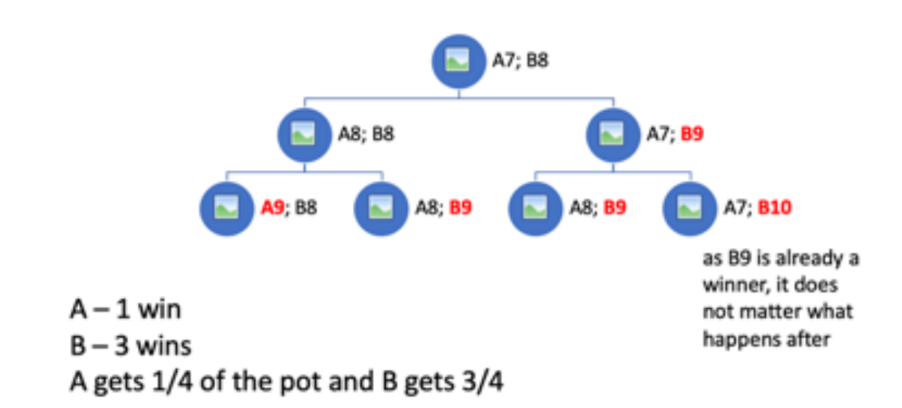

6 Probability as a calculus
Chapter 3 ended with a specification: reasoning under certainty is classical logic, but most scientific reasoning is not conducted under certainty, and we need a calculus that extends the logic to graded belief. Chapter 4 showed why the experiment is the cleanest way to learn a cause, and why, outside the experiment, conclusions come with uncertainty attached. This chapter lays down the calculus that measures uncertainty with numbers.
The strategy is deliberately narrow. We take the rules of probability as axioms — a short list of statements about a symbol \(P\) — and work out their consequences, without yet asking what the numbers mean. Two readings are available for that question: a probability can be read as a long-run frequency of repeatable events, or as a degree of belief that grades a state of knowledge. The choice between them, and the reasons this book takes the second, is the subject of Chapter 7. Here the numbers are left uninterpreted on purpose: the axioms and everything derived from them hold under either reading, and it is cleaner to see the machine work before arguing about what it is a machine for.
What the axioms fix is the relations among probabilities — how the probability of “A and B” relates to the probability of A, how conditioning on new information works. What they do not fix is the actual numbers that go in. For that we need a way to assign probabilities in the first place, and the oldest such method — counting equally likely cases — occupies the second half of the chapter. It takes us, with nothing more than careful counting, to the first important probability distribution: the binomial. The chapter closes on the distinction that the rest of the book turns on, between a probability distribution as a mathematical object and the empirical distribution of a finite data set.
6.1 Measuring uncertainty with numbers
Suppose a proposition A — “this patient has a stroke within the year”, “the drug lowers blood pressure”, “the coin lands heads”. Under certainty A is simply true or false. Under uncertainty we want to say how plausible A is, and to say it with a number, so that the plausibility can be calculated with rather than merely gestured at. Write that number \(P(A)\), a real number between 0 and 1:
- \(P(A) = 0\) — A is certainly false;
- \(P(A) = 0.5\) — A and not-A are equally plausible;
- \(P(A) = 1\) — A is certainly true;
with the intermediate values reading as intermediate degrees of plausibility. Two reasons make the numerical scale worth insisting on. First, numbers can be combined by fixed rules, which is what the rest of this book does. Second, verbal grades — “very likely”, “a fair chance”, “almost certain” — are understood differently by different people, professionals included, so a shared scale is a precondition for communicating uncertainty at all.1
The number needs an argument attached — probability of what, and given what — but not, at this stage, an interpretation. We defer to Chapter 7 the question of whether \(P(A)\) reports a frequency in the world or a degree of belief in the head of the reasoner. The axioms below are neutral between those readings.
6.2 The rules of probability
The notation, which the book uses throughout (Chapter 3 introduced the same connectives in word form):
\(P(A)\) — probability of A. A stands for a proposition, event, hypothesis, parameter value — anything that can be true or false.
\(\land\) — AND. \(P(A \land B)\) is the probability that A and B are both true.
\(\lor\) — OR. \(P(A \lor B)\) is the probability that A or B (or both) is true.
\(\lnot\) — NOT. \(P(\lnot A)\) is the probability that A is false.
\(A \vert B\) — conditional. \(P(A \vert B)\) is the probability of A given B, i.e. the probability that A is true if we assume B is true.2
The calculus was given its standard axiomatic form in 1933 by Kolmogorov, who defined probability as a measure on a sample space \(\Omega\) — the set of all possible outcomes, with events as subsets of \(\Omega\).3 We adopt his axioms, reading an “event” broadly as any proposition that can carry a truth value.4
The measure-on-a-space idea has a concrete picture, due to Blitzstein and Hwang, that is worth carrying through the book.5 Picture each possible outcome of the experiment as a pebble, and the sample space as the bag holding all the pebbles. Each pebble carries a mass; the masses are non-negative and together sum to 1. An event is a handful of pebbles — a subset of the bag — and its probability is the total mass of the handful. Roll two dice: the bag holds 36 pebbles, one for each ordered pair \((i, j)\) with \(i, j \in \{1, \dots, 6\}\), each of mass \(1/36\); the event “the sum is 8” is the handful \(\{(2,6), (3,5), (4,4), (5,3), (6,2)\}\), so \(P(\text{sum} = 8) = 5/36\). When the outcomes form a continuum — a blood pressure, a reaction time — the pebbles melt into mud: probability is smeared over a surface, any single point carries mass zero, and an event is a region whose probability is the amount of mud over it (Chapter 6 develops this picture as the probability density). With the picture in place, the axioms are bookkeeping over pebbles.
Axioms:
\(P(A) \geq 0\)
\(P(\Omega) = 1\)6
\(P(A \lor B) = P(A) + P(B)\), if A and B are mutually exclusive (they cannot both be true).
\(P(A~\vert~B) = \frac{P(A \land B)}{P(B)}\)7
Two remarks. First, axiom 3 requires mutual exclusivity — A and B cannot both happen — not independence; the distinction matters and is the subject of Exercise 4. Kolmogorov’s own axiom extends additivity to countably infinite collections of mutually exclusive events; whether that stronger form is required is a question Chapter 7 returns to, and it makes no difference to anything computed in this book. Second, axiom 4 is here a definition — it says what the symbol \(P(A \vert B)\) means. Chapter 7 shows that on the degree-of-belief reading the same equation can instead be derived, as a rule the reasoner is forced to obey; for now it is simply the definition of conditional probability.
In the pebble picture, learning that B occurred is an instruction: discard every pebble outside B, and rescale the remaining masses so that they again sum to 1. That instruction is the whole content of axiom 4. Continue with the two dice, and suppose we learn that the first die shows a 3. Discard the 30 pebbles whose first coordinate is not 3; six pebbles survive, each rescaled from mass \(1/36\) to \(1/6\). The event “the sum is 8” now consists of the single surviving pebble \((3,5)\), so \(P(\text{sum} = 8 \mid \text{first die} = 3) = \frac{1/36}{6/36} = 1/6\) — up from \(5/36\), because the information removed proportionally more of the ways to fail than of the ways to succeed.
Note what conditioning did not do: it created no new pebbles. In the sample space, information only ever removes possibilities and rescales what remains; it cannot add a possibility that was not in the bag from the start. This one-way character of conditioning looks like a triviality here. Chapter 7 shows that it marks the boundary of what updating alone can do for scientific inference.
The definition of conditional probability reads naturally off the sample space. The number of elements in \(\Omega\) is \(n(\Omega)\); two subsets A and B overlap in the intersection \(A \land B\). Computing \(P(A \vert B)\) is computing the number of elements in the intersection of A and B relative to the number in B alone: \(P(A \vert B) = \frac{n(A \cap B)}{n(B)}\). Dividing numerator and denominator by \(n(\Omega)\) converts counts into probabilities:
\[P(A \vert B) = \frac{n(A \cap B)/n(\Omega)}{n(B)/n(\Omega)} = \frac{P(A \cap B)}{P(B)}\]
6.2.1 Consequences of the rules
The following all follow from the axioms by short derivations; the book uses them freely.
\(0 \leq P(A) \leq 1\) — probabilities are bounded by 0 and 1.
\(P(\lnot A) = 1 - P(A)\)
Monotonicity: if B is a subset of A (\(B \subset A\)), then \(P(B) \leq P(A)\). If B can be deduced from A: \([A \lor (B \land \lnot A) \Leftrightarrow B]\), then \(P(B) \leq P(A)\).
\(P(A \land B) \le P(A)\); \(P(A) \leq P(A \lor B)\)
If B can be deduced from A and \(P(A) > 0\), then \(P(B~ \vert ~A) = 1\) and \(P(\lnot B~ \vert A) = 0\).8
Logically equivalent propositions/hypotheses have the same probability: if \(A \Leftrightarrow B\), then \(P(A) = P(B)\)
Def: A and B are independent (not correlated) if and only if \(P(A~ \vert B) = P(A)\)
If A and B are independent, then \[P(A\land B) = P(A)P(B)\]
If A and B are not independent, then \[P(A \lor B) = P(A) + P(B) - P(A \land B)\] and for 3 events: \[\begin{array}{lcl} P(A \lor B \lor C) = P(A) + P(B) + P(C) - \\P(A \land B) - P(B \land C) - P(A \land C) + \\P(A \land B \land C) \end{array}\]
Items 9 and 10 restate, inside the calculus, facts that were about the calculus in Chapter 3: entailment forces conditional certainty, and logical equivalence forces equal treatment. The footnote to item 9 is the germ of the weak syllogism — that observing a consequence raises the plausibility of a possible cause — which Chapter 7 justifies and Chapter 8 grows into the weight of evidence.
6.3 Counting: the classical definition of probability
The axioms constrain probabilities but do not supply them. The oldest way of supplying them is to count. Take the question “what is the probability of getting a 6 when throwing a fair die?”. It took gamblers until the 16th century to treat such questions systematically — the first treatment is Cardano’s, in a book on games of chance written around 1564 and published only in 1663.9 The answer proceeds by counting:
Imagine all possible results of a single throw: {1, 2, 3, 4, 5, 6}.
Count the results that are a six. There is one, so \(k = 1\).
Count all possible results. There are six, so \(N = 6\).
The probability is \(P(\text{six}) = k/N = 1/6\).
This is the classical definition of probability: the number of favourable cases divided by the number of possible cases, when all cases are equally likely. The scheme looks trivial but carries real assumptions, and they are worth stating: besides equal likelihood of the cases, it assumes stability of the system (the die, the thrower, the table, the laws of physics do not change during the experiment), the constancy of nature, and exchangeability (the result does not depend on the order in which the throws are recorded).10
The classical definition is easy to grasp and appears to describe something objective — a process in the world, someone throwing a die. Two limits are worth flagging now and returning to in Chapter 7. First, the “objectivity” already includes the whole arrangement — the thrower, the table, the laws of nature — not the die alone. Second, and more restrictive, favourable-over-possible applies only where there is a set of equally likely cases to count. A scientific hypothesis, a one-off event, a parameter that has a single true value — these have no cases to count, and the classical definition falls silent about them. The counting road is powerful exactly where experiments are built to make it apply, and mute elsewhere.
6.3.1 Counting in the multiverse
The move that unlocked the counting road was made in 1654. Consider a game where two players pool equal stakes into a pot that goes to the winner. They cast dice; after each round whoever throws the larger sum scores a point (draws do not count); the game runs until someone reaches 9 points and takes the pot. Now suppose the game is interrupted when player A has 7 points and player B has 8. Is there a fair way to divide the pot? This problem of points was thought insoluble for centuries, until Blaise Pascal and Pierre de Fermat solved it in an exchange of letters. Earlier attempts had tried to reason from the games actually played (the 8 and 7 points), which led to contradiction. Fermat’s insight was to reason counterfactually — to let the game continue, not in our world, but in an expanding array of parallel worlds.
The starting point (A7B8) is our world. The first imaginary round splits it into two (A8B8 and A7B9), one of which is already a win for B. On the next round B, who in life would simply stop having won, keeps playing, so the worlds split again, into four. At that level every game has ended, and we count: A wins 1 of the 4, B wins 3. So it is fair to give ¼ of the pot to A and ¾ to B — equivalently, \(P(\text{A wins}) = \tfrac14\) and \(P(\text{B wins}) = \tfrac34\). Probability, on this reading, is counting across the multiverse; most of the mathematics that follows consists of algorithms that speed the counting up, since the multiverse expands exponentially and soon defeats counting by hand.
The conceptual gain is larger than the arithmetic. Before Fermat, a unique event — this interrupted game, played once — had no frequency and so no probability. By imagining the continuations, we have given a one-off event a frequency, and hence a probability. The same device returns in Part III as the potential-outcomes framework, where the parallel worlds are the treated and untreated versions of the same patient, and the “continuation we did not see” is the outcome under the treatment the patient did not receive (Chapter 10). Counting across imagined worlds is one of the book’s recurring moves; it starts here.
6.4 The rules of combinatorics
Counting the multiverse by hand does not scale: the number of worlds grows exponentially with the number of rounds. The rules of combinatorics are the speed-up algorithms; each answers one question of the form “in how many ways?”.
6.4.1 The addition rule
Let \(E_1\) and \(E_2\) be mutually exclusive events, and let \(E\) be the event that either \(E_1\) or \(E_2\) occurs. Then
\[n(E) = n(E_1) + n(E_2)\]
where \(n(\cdot)\) counts the outcomes of an event.
6.4.2 The multiplication rule
Suppose \(E_1\) can result in any one of \(n(E_1)\) outcomes, and for each of those there are \(n(E_2)\) possible outcomes of \(E_2\). If \(E\) is the event that both \(E_1\) and \(E_2\) occur, then
\[n(E) = n(E_1) \times n(E_2)\]
More generally, with \(n_1\) choices for the first position, \(n_2\) for the second, and so on to \(n_k\), the number of sequences of \(k\) elements is \(n_1 \times n_2 \times \dots \times n_k\).
6.4.3 Permutations
How many orderings of the three elements ABC are there? Six: {ABC, ACB, BCA, BAC, CAB, CBA}. This is \(n_1 \times n_2 \times n_3 = 3 \times 2 \times 1 = 6\), written with the factorial \(n! = 3! = 6\). In general \(n! = (n)(n-1)(n-2)\cdots(3)(2)(1)\), and
n distinct objects can be arranged (permuted) in n! ways.
6.4.4 Variations (order matters, repetitions not allowed)
With \(n\) elements and sequences of length \(k\),
\[V_n^k = n(n - 1) \cdots (n - k + 1) = \frac{n!}{(n - k)!}\]
Eight athletes compete; how many possibilities for the first three places? \(8 \times 7 \times 6 = 336\), equivalently \(8!/5! = 336\).
6.4.5 Combinations (order not important)
How many sets of \(k\) elements can be chosen from \(n\) distinct elements, written \(\binom{n}{k}\)?
\[\binom {n}{k} = \frac{n!}{k!(n - k)!}\]
There is one way to choose 0 elements, \(\binom{n}{0} = 1\), and one way to choose all \(n\), \(\binom{n}{n} = 1\). The number of different sets of 4 letters drawn from the alphabet is \(\binom{26}{4} = \frac{26!}{4!\,(26-4)!} = 14950\).
Nature chooses the cases: three ways to count particles
The classical definition divides favourable cases by possible cases, when the cases are equally likely. It does not say what the cases are. Statistical physics gives the cleanest demonstration that this choice is an empirical hypothesis, not a logical truth — and that nature can reject a counting model that seems self-evident.
Place \(r\) particles into \(n\) cells (regions of space, or energy states). Three counting models answer “how many equally likely cases are there?” differently:
Maxwell–Boltzmann. The particles are distinguishable, like named patients: particle 1 in the first cell and particle 2 in the second differs from the reverse. By the multiplication rule there are \(n^r\) arrangements, each taken as equally likely.
Bose–Einstein. The particles are indistinguishable: only the occupancy numbers — how many particles each cell holds — are physically real. The equally likely cases are the \(\binom{n+r-1}{r}\) occupancy patterns.
Fermi–Dirac. The particles are indistinguishable and no cell may hold more than one (the Pauli exclusion principle). The equally likely cases are the \(\binom{n}{r}\) ways of choosing which cells are occupied.
For two particles in three cells the three models give nine, six, and three equally likely cases, and they disagree about observable events:
Show code
cells <- 1:3
mb <- expand_grid(p1 = cells, p2 = cells) # distinguishable: 3^2 = 9
be <- mb %>% filter(p1 <= p2) # occupancy patterns: choose(4, 2) = 6
fd <- mb %>% filter(p1 < p2) # exclusion: choose(3, 2) = 3
tibble(model = c("Maxwell-Boltzmann", "Bose-Einstein", "Fermi-Dirac"),
`equally likely cases` = c(nrow(mb), nrow(be), nrow(fd)),
`P(both in one cell)` = c(mean(mb$p1 == mb$p2),
mean(be$p1 == be$p2),
mean(fd$p1 == fd$p2))) %>%
kable(digits = 2)| model | equally likely cases | P(both in one cell) |
|---|---|---|
| Maxwell-Boltzmann | 9 | 0.33 |
| Bose-Einstein | 6 | 0.50 |
| Fermi-Dirac | 3 | 0.00 |
Which model describes the world is settled by experiment, not by argument. Photons and helium-4 atoms follow Bose–Einstein statistics; electrons, protons and neutrons follow Fermi–Dirac statistics;11 no known particle follows Maxwell–Boltzmann statistics, which survives as an approximation valid when the available cells far outnumber the particles.12
Nor was arrangement-counting self-evident before physics intervened. In the Encyclopédie of 1754, d’Alembert maintained that two tosses of a coin present three equally possible cases — heads on the first throw, heads on the second, or heads on neither — and concluded that the probability of at least one head is 2/3 rather than 3/4.13 For coins, taking the patterns rather than the ordered arrangements as the equal cases is an error; for photons, pattern-counting is the rule nature follows. The choice of the equally likely cases was contested for two centuries before experiment settled it for particles, and no amount of unaided reasoning could have settled it.
The probability calculus is the same in all three cases. The axioms are untouched, and each model computes with the combinatorial shortcuts above. What differs is the sample space and the assignment of equal probabilities over it. “Equally likely” is therefore the empirical component of every classical-probability calculation; the loaded die of Exercise 6 makes the same point at a smaller scale.
6.5 From counting to the binomial distribution
We can now answer a question that recurs throughout the book: what is the probability \(P_n(k)\) that an event A occurs exactly \(k\) times in \(n\) independent tries, when A has probability \(p\) on each try?
- Take first the case where the \(k\) occurrences come in an uninterrupted run at the start. By the multiplication rule, the probability of that particular sequence is
\[P(A_1 \dots A_k\, \lnot A_{k+1} \dots \lnot A_n) = P(A_1)\dots P(A_k)\,P(\lnot A_{k+1}) \dots P(\lnot A_n) = p^k (1 - p)^{n-k}\]
The same value results wherever the \(k\) occurrences fall in the sequence. In the special case \(n = 1\), where \(k\) is either 0 or 1, this is the Bernoulli probability mass function
\[f(k, p) = p^k(1 - p)^{1-k}\]
For example, with \(p = 0.1\): \(f(0, 0.1) = 0.1^0 \times 0.9^1 = 0.9\) and \(f(1, 0.1) = 0.1^1 \times 0.9^0 = 0.1\).
- For general \(k\) we must also count the sequences of length \(n\) in which A occurs exactly \(k\) times. That count is
\[\binom{n}{k} = \frac{n!}{k!(n - k)!}\]
- Multiplying the probability of one such sequence by the number of them gives
\[P_n(k) = \binom{n}{k}p^k(1 - p)^{n-k}\]
This is the binomial distribution. For example, the probability of 6 heads in 10 tosses of a fair coin is
\[P_{10}(6)= \binom{10}{6} (1/2)^6 (1/2)^4 = \frac{10!}{4!\,6!}\,(1/2)^6 (1/2)^4 = 0.205\]
| k | 0 & 10 | 1 & 9 | 2 & 8 | 3 & 7 | 4 & 6 | 5 | sum |
| Pn | 0.001 | 0.010 | 0.044 | 0.117 | 0.205 | 0.246 | 1.000 |
The distribution is symmetric as long as A and not-A are equally probable. The binomial is the first fully worked probability distribution in the book — a rule assigning a probability to every value a count can take — and the next section says what kind of object that is.
6.6 Probability distributions and their data-generating stories
The binomial above is a probability distribution: it lists, for every value the outcome could take (here, \(k = 0, 1, \dots, n\) successes), how probable that value is. This is a mathematical object, fixed by the model and its parameters (\(n\) and \(p\)), and it exists before any data are collected. It is essential to keep it apart from a second object it is easily confused with: the empirical distribution of a data set — the histogram of the values you actually observed. The probability distribution is the assumption; the empirical distribution is the evidence. They are related — a larger sample drawn under the model produces an empirical histogram that more closely resembles the probability distribution — but they are not the same thing, and later chapters depend on not confusing the model with the data it is supposed to explain. (Chapter 7 revisits this from the side of interpretation: whether the probability distribution describes the world or the analyst’s knowledge of it.)
A useful discipline for meeting a new distribution is to ask what data-generating story produces it — the mechanism that, if it were operating, would give rise to that distribution. The story is what connects a real process to a mathematical form, and it is a better guide to which distribution to use than any list of formulae:
Bernoulli / binomial. A single yes/no trial with success probability \(p\) is a Bernoulli draw. Count the successes in \(n\) independent trials that each share the same \(p\), and the count follows the binomial — exactly the derivation above. Whenever the data are “\(k\) out of \(n\)” with exchangeable, equal-probability trials, this is the story: number of patients who have a stroke, number of coins that land heads, number of cells that are occupied.
Normal. Add up many small, independent contributions of comparable size, and the sum tends to a normal distribution almost regardless of the shape of the individual contributions — the reason measurement errors, and quantities built from many additive influences, are so often approximately normal. The story is addition of many small effects.
Log-normal. Multiply many small independent factors instead of adding them, and the product tends to a log-normal distribution — equivalently, the logarithm of the quantity is normal, because the log turns the product into a sum. The story is multiplication of many small effects, which is why concentrations, incubation periods, and incomes — quantities generated by proportional rather than additive processes — are often log-normal.
These three are enough to make the point that a distribution comes from a mechanism. The systematic catalogue — the binomial and its relatives, the Poisson, the normal and log-normal, and the continuous families used later for priors and for generalised linear models — is the business of Chapter 6, where each distribution is introduced with its own story, its parameters, and the R functions that compute with it.
6.7 Why these rules, and no others?
This chapter has taken the axioms as given and shown what follows. That leaves a question it has deliberately not answered: why these rules? Why should degrees of plausibility obey Kolmogorov’s axioms rather than some other calculus — and what entitles us to attach a probability to a scientific hypothesis, which has no frequency to count? Chapter 7 answers both. It shows that a reasoner who grades belief numerically and asks only that the grading be consistent is forced to the same sum and product rules, by an argument that never mentions counting; and it takes up what the numbers mean, why this book reads them as degrees of belief, and why that reading keeps working in the single-case settings where the counting road falls silent. It also introduces the companion of the sample space — the hypothesis space, the set of candidate explanations an analyst entertains — and returns there to the one-way character of conditioning noted above. The rules established here are correct under either reading. What Chapter 7 adds is the licence to use them for the questions science actually asks.
6.8 Key points
- Probability is developed here as a calculus: a symbol \(P\) obeying Kolmogorov’s axioms, with everything else derived. The axioms fix the relations among probabilities, not the actual numbers.
- In the pebble picture the sample space is a bag of pebbles, an event is a handful, and probability is the mass of the handful; continuous outcomes turn the pebbles to mud (densities, Chapter 6).
- Conditional probability \(P(A \vert B) = P(A \land B)/P(B)\) is taken here as a definition; Chapter 7 shows it can instead be derived on the degree-of-belief reading. In pebble terms, conditioning is discard and rescale: information only removes possibilities and reweighs the rest — it never adds a pebble that was not in the bag (a boundary Chapter 7 returns to).
- The classical definition supplies actual numbers by counting: favourable cases over possible cases, when the cases are equally likely. Its background assumptions are stability of the system, constancy of nature, and exchangeability. It applies only where equally likely cases can be counted, and is silent about unique events and hypotheses.
- The problem of points (Pascal and Fermat, 1654) fixes a fair division by counting the ways the interrupted game could have continued in imagined parallel worlds. In the multiverse a unique event acquires a frequency, and hence a probability — the device that returns as potential outcomes in Chapter 10.
- The rules of combinatorics are counting shortcuts: addition for mutually exclusive alternatives, multiplication for sequential choices, \(n!\) for orderings, \(n!/(n-k)!\) for ordered selections, and \(\binom{n}{k}\) for unordered selections.
- “Equally likely cases” is an empirical hypothesis, not a logical truth. Maxwell–Boltzmann, Bose–Einstein and Fermi–Dirac counting give different probabilities for the same particles-in-cells setup; experiment decides which nature follows, while the calculus is the same for all three.
- The binomial distribution \(P_n(k) = \binom{n}{k}p^k(1-p)^{n-k}\) is assembled from two shortcuts: the multiplication rule gives the probability \(p^k(1-p)^{n-k}\) of one sequence, and \(\binom{n}{k}\) counts the sequences.
- A probability distribution (the model) is distinct from the empirical distribution of a data set (the evidence). Each distribution has a data-generating story: the binomial counts equal-probability yes/no trials; the normal sums many small effects; the log-normal multiplies them. Chapter 6 is the full catalogue.
6.9 Exercises
Divide the pot. Players A and B play to 5 points; the game is interrupted with A on 2 points and B on 4. Following Fermat, let the game continue in imagination for the maximum number of rounds it could still take, count the continuations won by each player, and divide the pot. Verify your division by simulating the interrupted game many times with
sample()orrbinom().Ward arithmetic. (a) In how many different orders can 5 patients be scheduled for morning rounds? (b) How many distinct pairs of patients can be chosen from a ward of 10? (c) Out of 8 candidate biomarkers, in how many ways can an ordered shortlist of 3 be filled? For each, state whether you used permutations, combinations, or variations.
Build the binomial by hand. In a population where 30% are carriers of an infection, 4 people are sampled independently. Use the multiplication rule to write down the probability of the particular sequence carrier, carrier, non-carrier, non-carrier; count the arrangements containing two carriers with \(\binom{4}{2}\); combine the two numbers, and check the result with
dbinom(2, 4, 0.3).Exclusive is not independent. Toss two fair coins; let A = “the first coin shows heads” and B = “the second coin shows heads”. Verify that A and B are independent but not mutually exclusive, and that applying axiom 3 to them gives the wrong answer for \(P(A \lor B)\) (the right one is item 13). Then give an example of two events that are mutually exclusive but not independent.
Strokes on a ward. Source
R/simulate_cohort.R, generate the cohort, and estimate the stroke risk among untreated patients by counting rows. Use the binomial distribution to compute the probability that 4 or more of 20 untreated patients have a stroke, and check the answer by simulation withrbinom(). Then identify the binomial assumption that the cohort violates (do all untreated patients share one stroke probability?).The loaded die. The classical definition assumes equally likely cases. A loaded die has six faces but not six equally likely outcomes. Explain why favourable-over-possible fails here, and what extra information you would need to assign probabilities to its faces.
Counting like a photon. Two particles are placed into four cells. (a) Count the equally likely cases under each of the three counting models of the callout box. (b) Under each model, compute the probability that both particles occupy the same cell. (c) Adapt the enumeration code from the box to verify your answers. (d) State in one sentence which parts of this chapter’s machinery are the same across all three models, and what changes instead.
Two stories, two histograms. Draw 10,000 values as the sum of 12 independent
runif(1)draws, and another 10,000 as the product of 12 such draws. Plot a histogram of each, and a histogram of the log of the second. Which of the three looks normal, and which log-normal? Relate what you see to the data-generating stories in the last section.
The point is not merely pedantic. Studies asking people to attach numbers to phrases such as “likely” or “a real possibility” find ranges so wide that the same phrase can mean 20% to one reader and 80% to another; the disagreement persists among trained analysts.↩︎
B does not have to be actually true; we assume for the sake of argument that it is.↩︎
Kolmogorov AN, Grundbegriffe der Wahrscheinlichkeitsrechnung, Berlin: Springer, 1933; English translation: Foundations of the Theory of Probability, New York: Chelsea, 1950.↩︎
Reading an event as a proposition, rather than strictly as a subset of a sample space, is a deliberate choice, and it is what later lets \(P\) attach to a hypothesis or a parameter value — objects that are true or false but are not “outcomes” of a repeatable experiment. The two readings are compatible: the propositions form a Boolean algebra, which is isomorphic to a field of sets, so for the finite additivity used in this book nothing is lost by moving between them. Chapter 7 takes up the interpretive question this raises — how a hypothesis, which has no frequency, can have a probability.↩︎
Blitzstein JK, Hwang J, Introduction to Probability, 2nd ed., Boca Raton: Chapman & Hall/CRC, 2019 (the pebble-world picture).↩︎
The probability of a sure thing is one, which means that the probabilities under a probability distribution sum to one.↩︎
This is the definition of conditional probability. If you find it unintuitive, try this: in an urn there are 3 spheres and 3 cubes. Two of the spheres are blue and one is red. What is the probability that a random object drawn from the urn is a red sphere? Solution: \(P(sphere)=1/2\); \(P(red ~\vert~ sphere)= 1/3\); \(\begin{array}{lcl} P(sphere \land red)=P(sphere)P(red ~\vert sphere)\\ = 1/2 \times 1/3 = 1/6. \end{array}\)↩︎
If evidence e can be deduced from hypothesis H (H predicts e) and if \(P(H) > 0\) and \(P(e) < 1\), then \(P(H~ \lvert~ e) > P(H)\), or e increases the probability of H.↩︎
Cardano G, Liber de ludo aleae (written c. 1564, published 1663); English translation in Ore O, Cardano, the Gambling Scholar, Princeton: Princeton University Press, 1953.↩︎
The constancy of nature is the assumption behind all causal thinking; exchangeability means the result does not depend on the order in which the data are recorded. These are not trivial: much of the later book is about what to do when they fail.↩︎
Bose SN, “Plancks Gesetz und Lichtquantenhypothese,” Z Phys 1924;26:178-181 (DOI); Fermi E, “Zur Quantelung des idealen einatomigen Gases,” Z Phys 1926;36:902-912 (DOI); Dirac PAM, “On the theory of quantum mechanics,” Proc R Soc Lond A 1926;112:661-677 (DOI).↩︎
Feller W, An Introduction to Probability Theory and Its Applications, Volume I, 3rd ed., New York: Wiley, 1968.↩︎
d’Alembert JLR, “Croix ou pile,” in Diderot D, d’Alembert JLR (eds.), Encyclopédie, ou Dictionnaire raisonné des sciences, des arts et des métiers, vol. 4, Paris: Briasson, 1754; the episode and its relation to quantum counting are discussed in Gorroochurn P, Classic Problems of Probability, Hoboken: Wiley, 2012 (problem 12).↩︎